Met het Ondertekenportaal laat u cliënten documenten volledig online ondertekenen — veilig, snel en zonder dat de cliënt een account of software nodig heeft.
Het portaal vervangt het heen-en-weer mailen en printen van akkoordverklaringen en overeenkomsten. In het kort werkt het zo:
U importeert een of meer documenten (PDF of Word).
U geeft aan waar getekend moet worden en in welke volgorde.
Het portaal stuurt de cliënt een uitnodiging per e-mail.
De cliënt bevestigt zijn identiteit met een verificatiecode en tekent in de browser.
Iedere partij ontvangt de definitieve, verzegelde PDF met auditspoor.
Voor wie is deze handleiding?
Voor alle medewerkers van kantoor die documenten klaarzetten en versturen. De cliënt hoeft niets te installeren; hoofdstuk 9 laat zien wat de cliënt te zien krijgt.
Twee soorten ondertekenaars. Een kantoorondertekenaar (u of een collega) tekent ingelogd in het portaal. Een cliënt tekent via een beveiligde link in de e-mail.
Hoofdstuk 2
Inloggen en tweefactorbeveiliging
U logt in met uw e-mailadres, wachtwoord en een code uit uw authenticator-app. Zo komt niemand met alleen een wachtwoord binnen.
Open het portaal en vul uw e-mailadres en wachtwoord in.
De eerste keer stelt u een nieuw wachtwoord in en koppelt u tweefactorauthenticatie (2FA).
Bij elke login voert u daarna de 6-cijferige code uit uw app (bijv. Microsoft Authenticator) in.
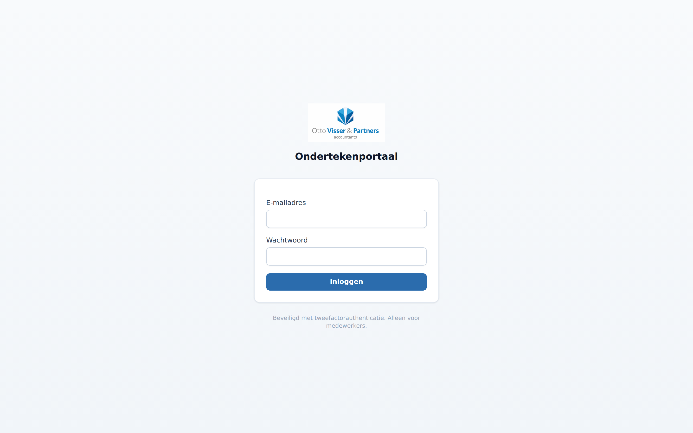
Het inlogscherm van het portaal.
In Instellingen beheert u uw wachtwoord, uw 2FA en uw persoonlijke handtekening. Die handtekening plaatst u later met één klik op documenten die u zelf ondertekent.
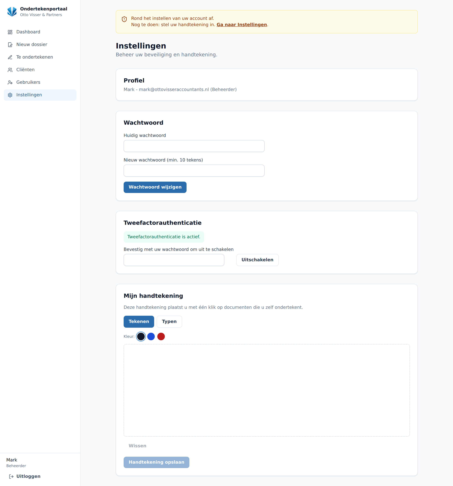
Instellingen: wachtwoord, tweefactorauthenticatie en uw eigen handtekening.
Hoofdstuk 3
Het dashboard
Het dashboard toont alle dossiers van het kantoor en in één oogopslag de status: concept, verzonden, gedeeltelijk of ondertekend.
Gebruik de filters bovenaan om snel op status te filteren.
De kolom Ondertekenaars laat zien hoeveel partijen al getekend hebben (bijv. “1/2 ondertekend”).
Klik op een titel om het dossier te openen.
Met de knop Nieuw dossier start u een nieuw verzoek.
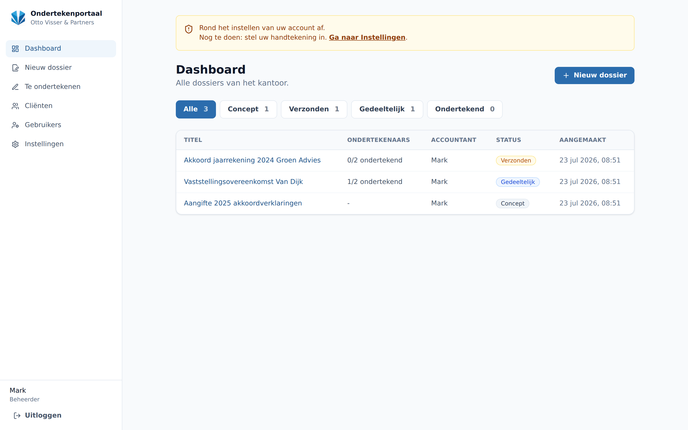
Het dashboard met statusfilters en alle lopende dossiers.
Hoofdstuk 4
Cliënten beheren en importeren
In de cliëntendatabase bewaart u naam, e-mail en telefoon. Bij het versturen vult het portaal die gegevens automatisch in.
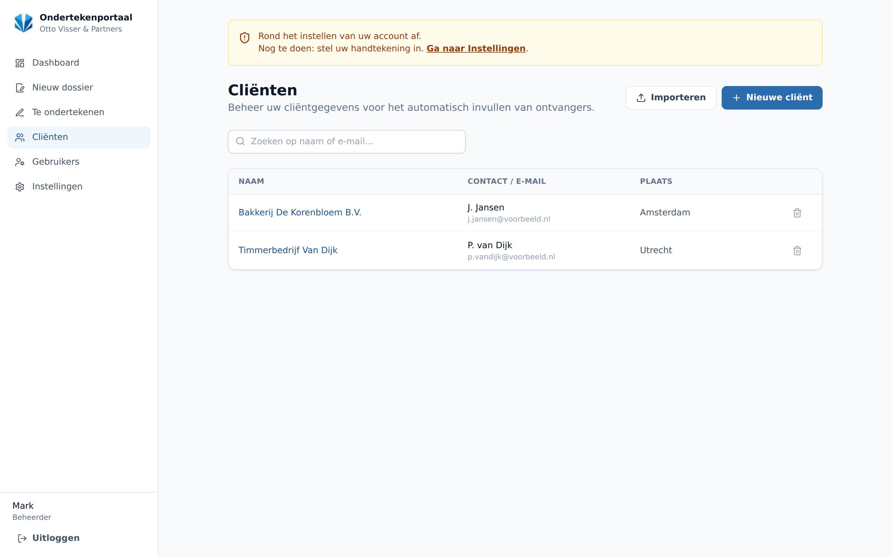
Overzicht van cliënten. Per cliënt kiest u of verifiëren via e-mail of sms gaat.
In bulk importeren met CSV of Excel
Heeft u veel cliënten? Importeer ze in één keer.
Ga naar Cliënten → Importeren.
Klik op Download voorbeeld-CSV om het juiste format te zien.
Vul uw gegevens in dezelfde kolommen in en upload het bestand (.csv of .xlsx).
Slim: bestaande cliënten (zelfde e-mailadres) worden bijgewerkt in plaats van dubbel toegevoegd. De kolom Verificatie bepaalt of de cliënt via e-mail of sms een code krijgt.
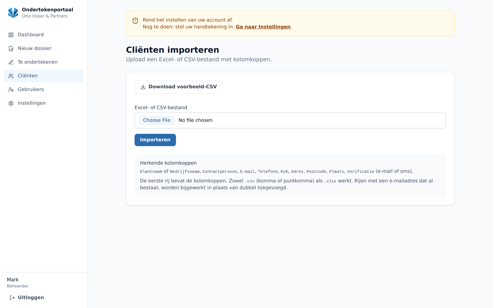
Importeerscherm met de knop om een voorbeeldbestand te downloaden.
Hoofdstuk 5
Een nieuw dossier aanmaken
Een dossier is één ondertekenverzoek. U kunt er meerdere documenten in stoppen, elk met een eigen titel.
Geef het verzoek een duidelijke titel (bijv. “Aangifte 2025 – akkoordverklaringen”).
Voeg één of meer documenten toe (PDF of Word). Word wordt automatisch naar PDF omgezet.
Gebruik Nog een document toevoegen voor bijvoorbeeld een akkoordverklaring IB én VPB in hetzelfde verzoek.
Optioneel: een begeleidend bericht in de e-mail.
Stel de geldigheid van de uitnodiging in (standaard 10 dagen).
Vink desgewenst aan dat de cliënt een kopie van de getekende stukken ontvangt.
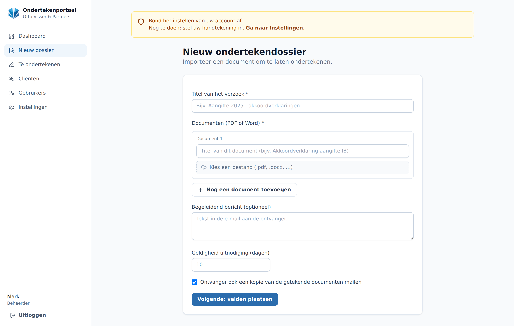
Documenten importeren en de basisgegevens van het verzoek invullen.
Meerdere documenten, één keer inloggen. De cliënt krijgt standaard één e-mail en tekent na één keer verifiëren alle documenten achter elkaar.
Hoofdstuk 6
Velden plaatsen en de ondertekenvolgorde
Hier bepaalt u wie tekent, in welke volgorde, en waar op elke pagina de handtekening komt.
Kies de ondertekenvolgorde: Eén voor één (de volgende komt pas aan de beurt als de vorige heeft getekend) of Iedereen tegelijk.
Voeg ondertekenaars toe: een Kantoor-collega of een Cliënt uit uw database.
Heeft het dossier meerdere documenten? Wissel bovenaan tussen de tabbladen per document.
Klik op de pagina om een tekenvak te plaatsen voor de geselecteerde ondertekenaar.
Klik op Opslaan en naar overzicht.
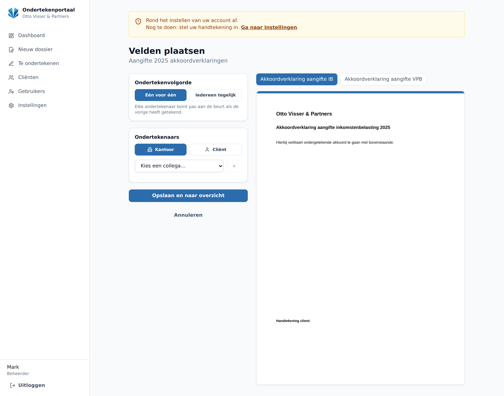
De volgorde instellen, ondertekenaars kiezen en tekenvakken plaatsen per document.
Hoofdstuk 7
Versturen en opvolgen
Vanuit het dossieroverzicht verstuurt u het verzoek en volgt u de voortgang op de voet.
De tijdlijn rechts toont elke stap: aangemaakt, verzonden, geopend en ondertekend — met datum en tijd.
Bij Ondertekenaars ziet u wie al getekend heeft en bij wie het verzoek nu “aan de beurt” is.
Met Herinnering sturen geeft u de cliënt een vriendelijke reminder.
Met Intrekken zet u het verzoek stop.
Onder Documenten downloadt u op elk moment de actuele versie.
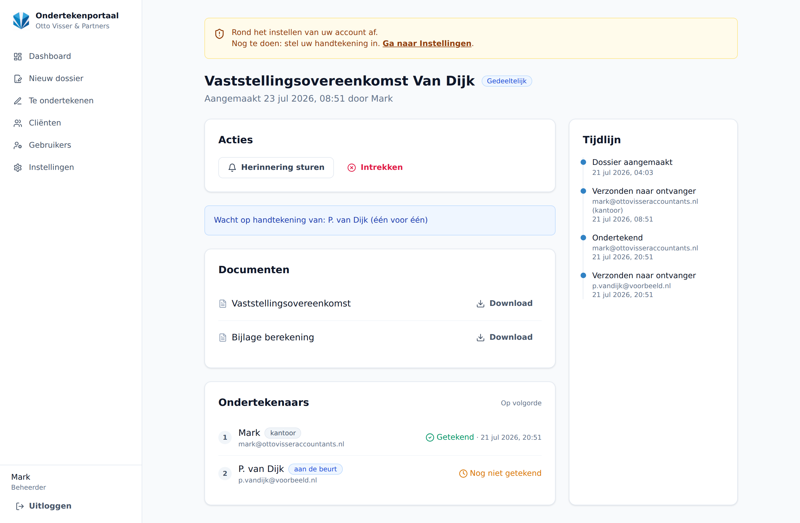
Dossierdetail: acties, documenten, ondertekenaars en de volledige tijdlijn.
Hoofdstuk 8
Zelf ondertekenen vanuit kantoor
Moet u (of een collega) zelf eerst tekenen? Dat doet u ingelogd, zonder e-mail, via Te ondertekenen.
Open Te ondertekenen in het menu. Hier staan de dossiers die op uw handtekening wachten.
Open het dossier, controleer het document en plaats uw handtekening.
Bij een “één voor één”-volgorde krijgt de volgende ondertekenaar daarna automatisch bericht.
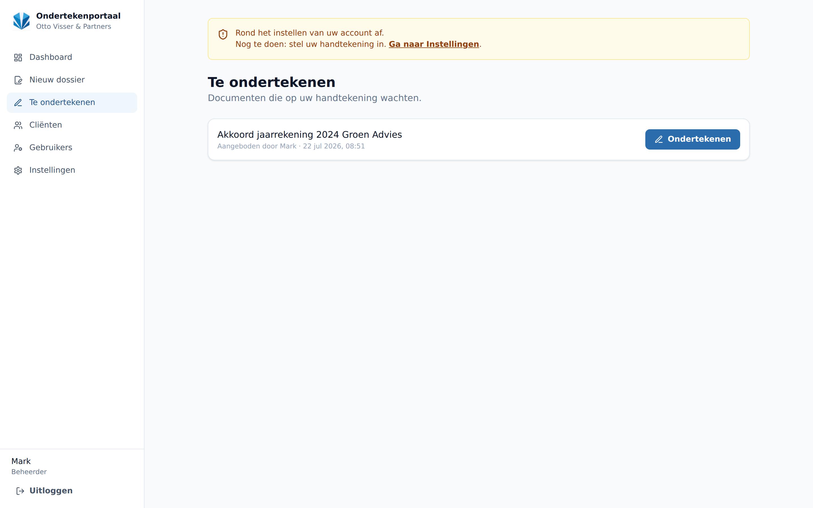
De wachtrij met dossiers die op uw handtekening wachten.
Hoofdstuk 9
Zo tekent de cliënt
De cliënt heeft geen account nodig. Via de link in de e-mail komt hij op een beveiligde pagina.
De cliënt opent de link en vraagt een verificatiecode aan (per e-mail of sms).
Na het invoeren van de code worden de documenten zichtbaar.
De cliënt tekent per document in het gemarkeerde vak (Teken hier), tekent onderaan zijn handtekening en klikt op Ondertekenen.
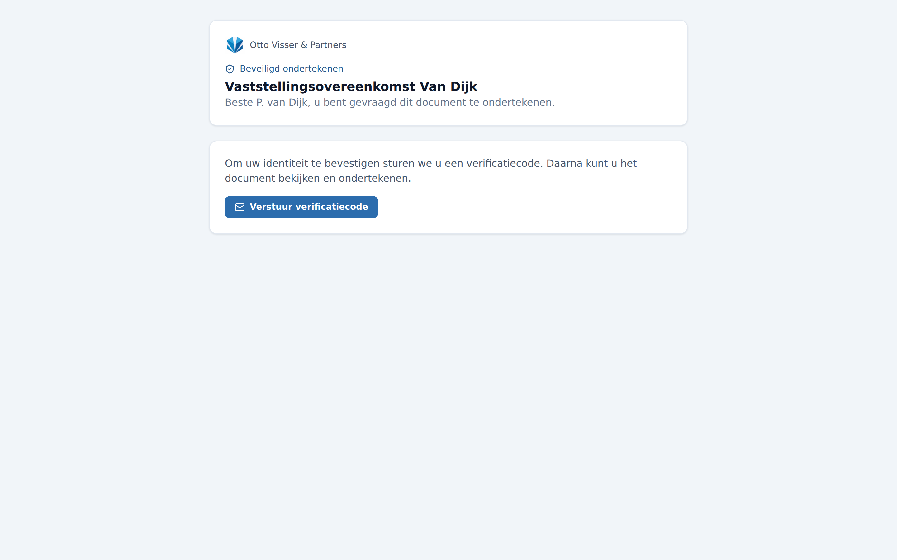
Stap 1: de cliënt bevestigt zijn identiteit met een verificatiecode.
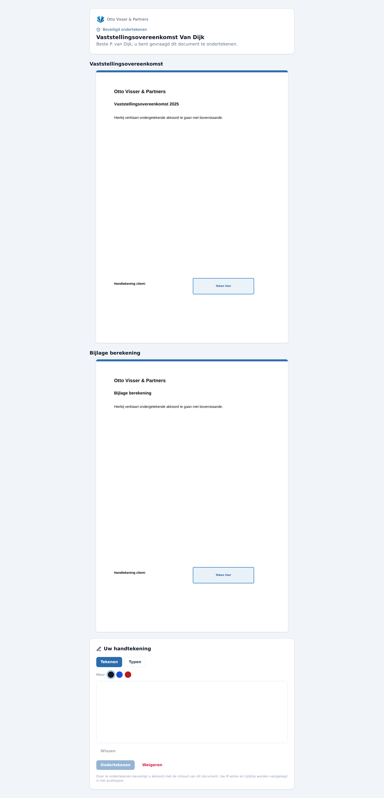
Stap 2: alle documenten met tekenvakken en het handtekeningveld onderaan.
Hoofdstuk 10
Gebruikers beheren
Beheerders maken accounts aan voor collega's en bepalen hun rol.
Ga naar Gebruikers (alleen zichtbaar voor beheerders).
Maak een nieuwe medewerker aan met naam en e-mailadres; die stelt bij de eerste login zelf een wachtwoord en 2FA in.
Kies de rol: Medewerker (dagelijks gebruik) of Beheerder (mag ook gebruikers beheren).
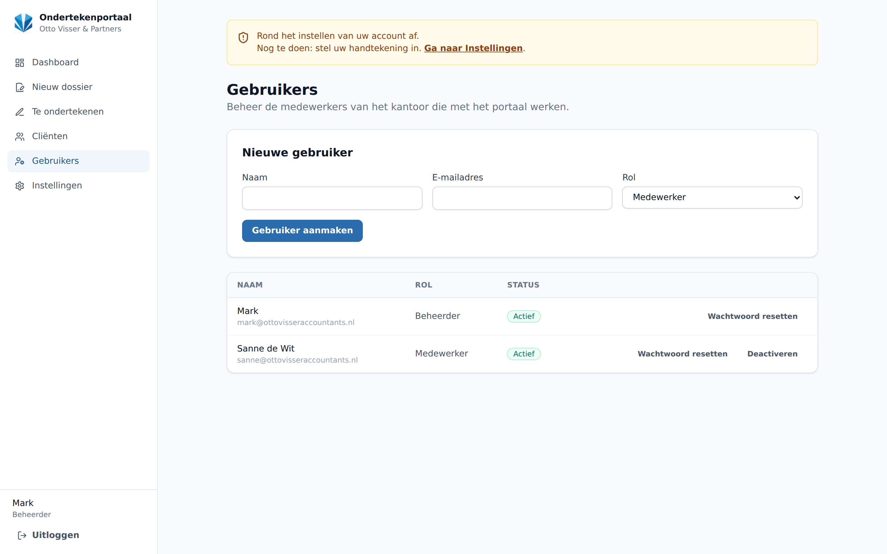
Gebruikersbeheer: collega's toevoegen en rollen toekennen.
Hoofdstuk 11
Beveiliging in het kort
Het portaal is ontworpen met beveiliging in meerdere lagen, zodat gevoelige cliëntgegevens beschermd blijven.
Waar u op kunt vertrouwen
Versleuteld opgeslagen. Documenten worden met AES-256 versleuteld voordat ze worden opgeslagen.
Beveiligde verbinding. Al het verkeer loopt over HTTPS.
Tweefactor voor kantoor. Inloggen vereist wachtwoord én een code uit uw authenticator-app.
Identiteitscheck voor cliënten. De cliënt tekent pas na een eenmalige verificatiecode per e-mail of sms.
Eenmalige links. Ondertekenlinks zijn persoonlijk, kortlevend en na gebruik ongeldig.
Auditspoor en verzegeling. Elke stap wordt vastgelegd (met tijd en IP-adres); de definitieve PDF krijgt een controlegetal (SHA-256), zodat latere wijziging aantoonbaar is.
Tips voor veilig gebruik. Deel uw wachtwoord en 2FA nooit. Controleer altijd het e-mailadres van de cliënt voor u verstuurt — dat adres bepaalt wie kan tekenen. Trek een verzoek in zodra het niet meer nodig is.